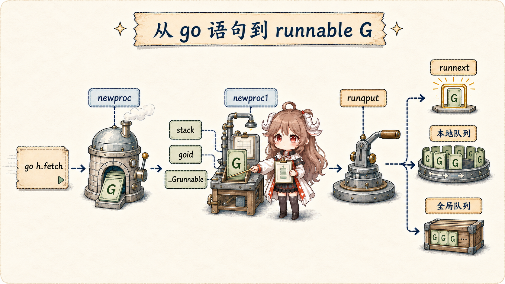
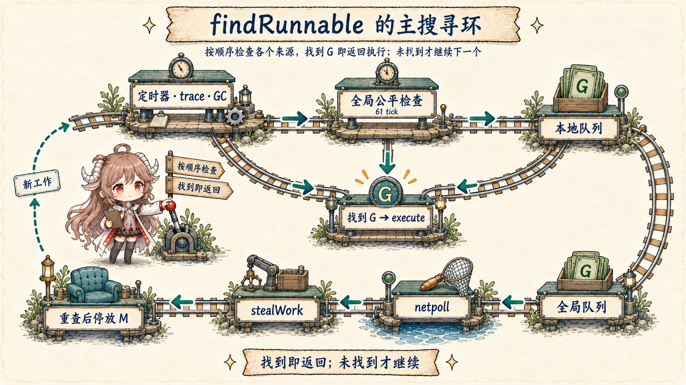
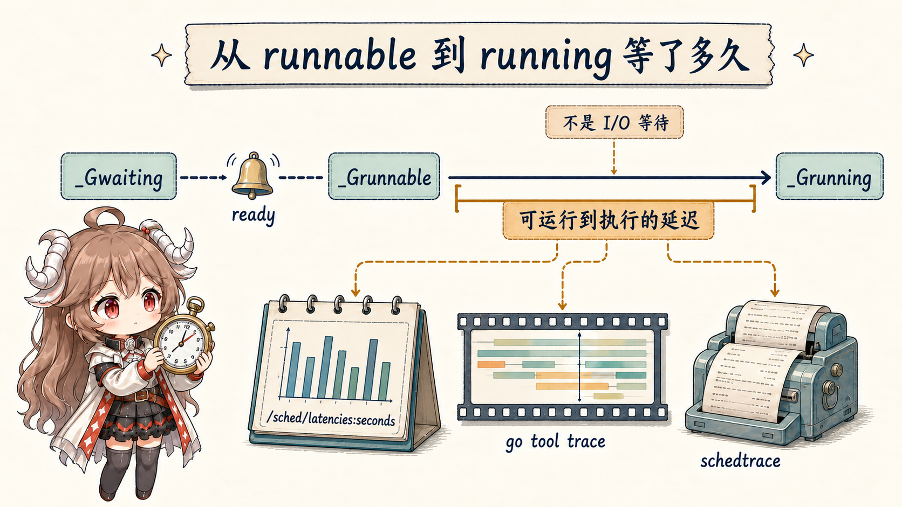

阅读契约：不需要先背 G、M、P。先把 goroutine 想成“待办任务”，线程想成“真正干活的人”。读完前半篇，你应能解释为什么启动 1000 个 goroutine 不等于创建 1000 个线程，以及“正在等”和“已经能跑但还没轮到”为什么是两种问题。
前半篇先讲可观察的调度过程；后半篇再把它对应到 Go 1.26.0 tag 的 runtime/proc.go 与 runtime/runtime2.go。 G/M/P 的概念边界参考官方 runtime HACKING；生产观测参考 runtime/metrics 和 Diagnostics。 本文讨论 gc runtime 的当前实现；别的 Go implementation 可以选择不同映射。
一、八个 goroutine 不等于八条线程
fetchd 最多为八个 URL 启动八个 worker goroutine。可以把它们想成八张待办卡：有的正在计算，有的正在等网络，有的已经拿到数据、正等 CPU。
Go 的调度器负责把“现在可以执行”的卡交给有限数量的线程。于是，八张卡不等于八个工人，更不保证八件事同时发生。
“抓取 go.dev”这张任务卡的一生：
新建 → 可以运行 → 正在运行 → 等网络
→ 网络就绪后再次可以运行 → 再次运行 → 完成网络数据到达时，任务卡不会瞬间跳回函数里；它只是重新获得“可以运行”的资格，还要等某个执行者选中。 后文的 runnable、running 与 waiting，就是这条时间线上的状态名。
源码用 G、M、P 描述这套分工。先用一句话记：G 是任务，M 是操作系统线程，P 是运行 Go 代码所需的执行资格与本地资源。 调度发生时，runtime 要把一个可运行的 G、一个 M 和一个 P 配到一起。下面的表只是把这个画面说得更精确：
| 符号 | runtime 对象 | 持有什么 | 数量关系 |
|---|---|---|---|
| G | runtime.g | goroutine 栈、调度保存点、状态、创建关系 | 可远大于线程和 P |
| M | runtime.m | 一条 OS thread、g0、当前 G、关联 P | 系统调用/cgo 可让 M 多于 P |
| P | runtime.p | 执行 Go 代码所需资源、local runq、allocator cache、timer | 恰有 GOMAXPROCS 个 |
最重要的关系不是缩写本身，而是它们不会永久绑定。M 可以换 G，G 也可以在不同时间跑到不同 M 上。 M 阻塞在 syscall 时可交还 P，让另一个 M 继续执行 Go；这正是 goroutine 不等于线程的工程价值。
GOMAXPROCS 限制的是并行执行 Go 代码
Go 1.26 中 P 的数量对应当前 GOMAXPROCS。若有 1000 个 runnable G 而 GOMAXPROCS=8，通常最多八条线程同时执行用户 Go 代码，
其余 G 等在调度器。线程总数仍可能因 syscall、cgo、runtime 工作与锁线程而更高。Go 1.25 起默认值还会感知容器 CPU limit；显式设置环境变量或调用
runtime.GOMAXPROCS 会改变自动更新行为，所以诊断时应读取实际 metric，而不是只看宿主机核心数。
二、状态比“goroutine 数量”更接近问题
runtime2.go 把 G 的关键状态区分为 _Grunnable、_Grunning、_Gwaiting、
_Gsyscall 等。数量相同，生产含义可能完全不同。
| 状态 | 含义 | 常见来源 | 延迟解释 |
|---|---|---|---|
_Grunnable | 已在 run queue，能执行但尚未执行 | 新建、channel 唤醒、I/O 就绪、timer | 调度/CPU 供给与竞争 |
_Grunning | 已与 M/P 匹配，正在执行 Go | execute | CPU 或当前代码路径 |
_Gwaiting | 停在 runtime 等待点 | channel、mutex、timer、netpoll | 等待资源，不是等待 CPU |
_Gsyscall | 进入系统调用 | 阻塞 syscall/cgo 边界 | 内核或外部代码 |
因此“goroutine 很多”本身不是故障。十万条长期 waiting 的连接可能是预期模型；几百条持续 runnable 却可能意味着 CPU quota、过度 fan-out、锁唤醒风暴或 GC 工作挤占。 先看状态分布和等待原因，再看总数。
三、go h.fetch 怎样变成一个 runnable G
编译器把 go 语句降为对 runtime.newproc 的调用。源码注释直接写着：创建一个运行 fn 的新 G，并把它放到等待运行的队列。
在读字段前，先把源码压成五个动作：准备一份 goroutine 记录；记住将来从哪个函数开始；把状态改成“可以运行”；
放入队列；必要时叫醒一个执行者。下面的 gfget、栈指针、goid 与 runqput，
分别实现这些动作，不是四套额外概念。
// 编译器把 go 语句变成对此函数的调用。
func newproc(fn *funcval) {
gp := getg()
pc := sys.GetCallerPC()
systemstack(func() {
newg := newproc1(fn, gp, pc, false, waitReasonZero)
pp := getg().m.p.ptr()
runqput(pp, newg, true)
if mainStarted {
wakep()
}
})
}
3.1 newproc1 优先复用 G，再准备初始执行现场
newproc1 在 system stack 上执行。它先从当前 P 的 free G 池取一个 gfget；没有才用 malg(stackMin) 创建栈并把 G 加入全局集合。
随后清空 g.sched，设置初始 SP、返回到 goexit 的 PC、调用入口、parent goid 与创建 PC，最后分配 goid 并把状态从 _Gdead 切到 _Grunnable。
newg := gfget(pp)
if newg == nil {
newg = malg(stackMin)
allgadd(newg)
}
newg.sched.sp = sp
newg.sched.pc = abi.FuncPCABI0(goexit) + sys.PCQuantum
gostartcallfn(&newg.sched, fn)
newg.parentGoid = callergp.goid
newg.gopc = callerpc
newg.goid = pp.goidcache
casgstatus(newg, _Gdead, _Grunnable)
这说明两个边界。第一，创建 goroutine 需要 G 元数据和初始栈，但通常会复用对象，不等于每次向 OS 创建线程。第二，函数体此时还没有执行；
_Grunnable 只表示它有资格被选中。
3.2 local runq、runnext 与 global runq
当前 P 持有一个 [256]guintptr 的 local runq 和一个单独的 runnext 槽。数组长度是 Go 1.26.0 实现细节，
但“局部队列优先保持 locality、全局队列负责溢出与公平”是理解路径的关键。
runnext 不是无限优先级
newproc 以 next=true 调用 runqput，新 G 会先尝试占据 runnext。取出时它继承当前时间片剩余部分，
让“创建/唤醒后马上协作”的模式少一次长队等待。如果槽已有 G，旧值会被挤进普通 local runq；没有 sysmon 的平台会避免这个优化，以免 ping-pong 任务饿死别人。
local queue 满了怎样溢出
runqput 在环形数组有空间时写 tail。满时 runqputslow 从本地拿走一半，再连同新 G 批量放进 global queue。
它不是“新来的一个直接进全局”，而是重新分布一批工作，给其他 P 获取或窃取的机会。
if t-h < uint32(len(pp.runq)) {
pp.runq[t%uint32(len(pp.runq))].set(gp)
atomic.StoreRel(&pp.runqtail, t+1)
return
}
runqputslow(pp, gp, h, t) // 一半 local G + 新 G → global runq3.3 schedule 与 findRunnable 怎样找到下一份工作
一轮调度的外壳很短：schedule 调用 findRunnable，得到 G 后处理 locked-M 等特殊情况，最后进入 execute。
真正复杂的是“从哪里找工作”。
func schedule() {
gp, inheritTime, tryWakeP := findRunnable()
// spinning、GC worker、locked M 等处理省略
execute(gp, inheritTime)
}
这不是一条简单 FIFO
findRunnable 顶部先检查 timer，再处理 trace reader 与 GC worker。为了防止两个不断互相唤醒的 local G 长期占满 P，
每当 schedtick % 61 == 0 且 global queue 非空，会先从全局拿一次。常规业务工作随后依次尝试 local queue 与 global queue。
队列没有工作时，调度器做一次非阻塞 netpoll；再让 spinning M 通过 stealWork 从其他 P 获取工作和 timer。
如果仍为空，它准备释放 P 并 park M，但在状态转换前后会重新检查全局/各 P 队列、timer 与 netpoll，避免“工作刚到、所有 worker 却睡了”的丢唤醒。
work stealing 为什么取一批而不是只拿一个
runqsteal 通过 runqgrab 尝试从另一个 P 的 local queue 取一半，把其中一个直接返回运行，其余落到自己的 local queue。
批量平衡减少频繁跨 P 竞争；随机选择受害 P 和 spinning M 限额则避免所有空闲线程同时扫描造成 CPU 浪费。
3.4 execute 才把 runnable 变成 running
选到 G 后，execute 把当前 M 的 curg 指向它、把 G 的 m 指回当前 M，
用 CAS 将状态从 _Grunnable 改为 _Grunning，清理等待与抢占标记，最后 gogo(&gp.sched) 恢复保存现场。
mp.curg = gp
gp.m = mp
casgstatus(gp, _Grunnable, _Grunning)
gp.waitsince = 0
gp.preempt = false
// trace、profiling 与时间片处理省略
gogo(&gp.sched)
因为 G 与 M 在这里才绑定，普通业务不应依赖 goroutine identity 对应固定线程。只有确有 thread-local/GUI/cgo 要求时才考虑
runtime.LockOSThread，并承担它对调度灵活性的影响。
四、等待、唤醒与抢占
4.1 阻塞不是停住线程：gopark 与 ready
goroutine 在 channel、mutex、timer 或 netpoll 上不能继续时，runtime 通过 gopark 保存等待原因，并用 mcall(park_m)
切到 M 的 g0 stack 完成状态转换与调度。稍后资源就绪，goready 在 system stack 调用 ready：
casgstatus(gp, _Gwaiting, _Grunnable)
runqput(mp.p.ptr(), gp, next)
wakep()第一篇的 socket 路径正好落在这里：netpoll 把 I/O 就绪的 G 从 waiting 转成 runnable 并注入队列；某个 M/P 以后才会执行它。 “I/O 已就绪”不是“handler 已恢复”，中间仍可能存在 runnable latency。
4.2 抢占保证机会，不保证硬实时
长时间不阻塞的 G 不能永远占住 P。Go 1.26 的 sysmon 在 retake 中观察 P 的 schedtick；同一 tick 超过内部
forcePreemptNS = 10ms 会请求 preemptone。它设置 gp.preempt 与 stackguard0 = stackPreempt，
支持的平台还会通过 preemptM 请求异步抢占。
10ms 是当前实现触发检查的阈值，不是 goroutine 的最大运行时，也不是延迟 SLA。信号投递、安全点、runtime 临界区、平台支持、cgo/syscall 与 OS 调度都会影响实际交接。 抢占提供公平机会，不能把 Go 变成硬实时系统。
五、用 runnable latency 验证调度假设

/sched/latencies:seconds 测量什么
runtime 内部 sched.timeToRun 的注释把它定义为 G 在 _Grunnable 到 _Grunning 之间的时间分布；
runtime/metrics 以累计直方图 /sched/latencies:seconds 暴露。它不包含 G 在 I/O、channel 或 mutex 上的 waiting 时间。
samples := []metrics.Sample{
{Name: "/sched/gomaxprocs:threads"},
{Name: "/sched/goroutines/runnable:goroutines"},
{Name: "/sched/latencies:seconds"},
}
metrics.Read(samples)
histogram := samples[2].Value.Float64Histogram()运行 burst、trace 与 handoff benchmark
scheduler_lab_test.go
先启动 64 个 goroutine，让它们全部在 release channel 上 waiting；关闭 channel 会一次唤醒它们，形成清晰的 runnable burst。
cd go-runtime/examples/fetchd
go test -run TestSchedulerBurst -trace scheduler.trace
go tool trace scheduler.trace
go test -run TestSchedulerMetricsAreAvailable
go test -bench BenchmarkGoroutineHandoff -benchmem
GODEBUG=schedtrace=1000,scheddetail=1 go test -run TestSchedulerBurst| 证据 | 回答的问题 | 不能单独回答 |
|---|---|---|
| scheduler metrics | runnable 数与延迟分布是否长期异常 | 哪条具体 G 在哪里等待 |
| execution trace | 一段窗口内 G/P/M、unblock、syscall、GC 的时间关系 | 长期趋势与低开销常驻监控 |
schedtrace | 某时刻 P、thread、runq 的粗快照 | 精细因果链 |
| goroutine profile | 采样时各 G 的栈与 waiting reason | 过去发生过的 runnable 排队 |
| CPU profile | 真正运行时 CPU 花在哪 | 没拿到 CPU 的 runnable 时间 |
六、回到 fetchd 的工程边界
- 并发不是并行。八个 fetch worker 可以并发等待网络；CPU 阶段仍受 P 与容器 quota 限制。
- 先限制 fan-out，再调调度器。无界创建 G 会放大内存、队列、连接池和唤醒压力；
GOMAXPROCS不是背压器。 - waiting 与 runnable 分开告警。前者通常指向资源依赖，后者指向执行供给或唤醒风暴。
- 不要把
runtime.Gosched当公平性修复。它可用于实验或特殊协作，业务正确性应靠阻塞边界、队列和同步协议。 - 从趋势到窗口再到源码。先用 metrics 找异常时间，再抓 trace，还原具体 G 的状态转换，最后回到函数路径。
这一篇的可复用结论是：创建 G ≠ 创建线程，runnable ≠ running，唤醒 ≠ 立刻恢复；G 必须与 M/P 匹配，延迟才能继续向前。
下一篇会放大 fetchd 的 result channel：沿 chansend/chanrecv、sudog、semaphore、mutex 与 select，回答什么时候 channel，什么时候锁，以及背压到底发生在哪里。
参考源码与文档
- Go runtime HACKING: scheduler structures
- Container-aware GOMAXPROCS
- runtime/metrics package documentation
- Diagnostics in the Go ecosystem
- G status definitions
- runtime g, m, and p structures
- newproc and newproc1
- local run queues and work stealing
- findRunnable
- schedule
- execute
- gopark and goready
- sysmon retake and preemption threshold
- preemptone
- fetchd scheduler lab